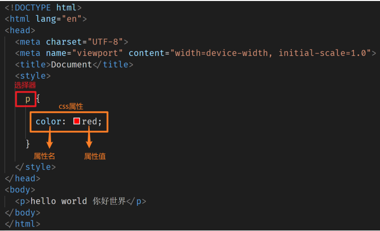
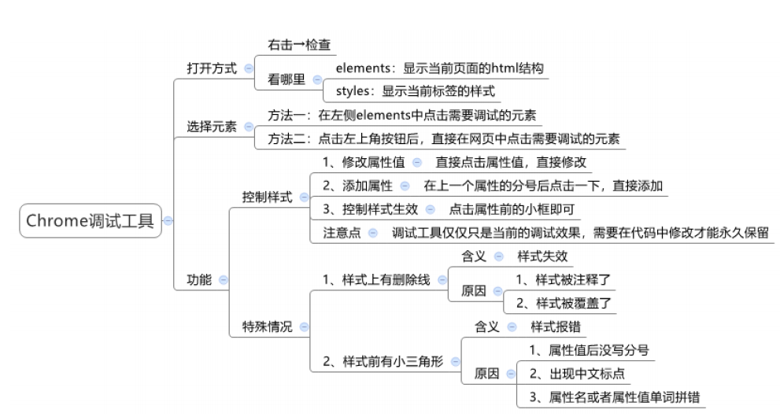
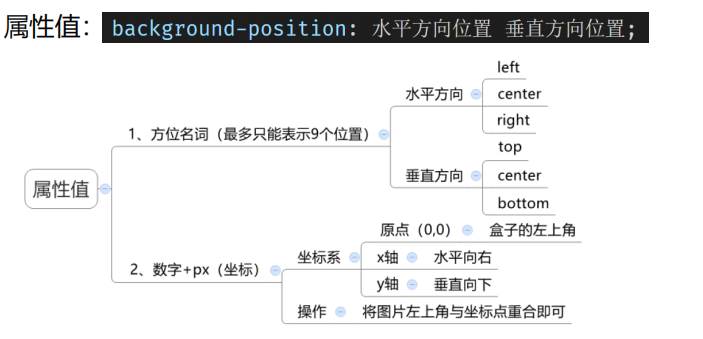
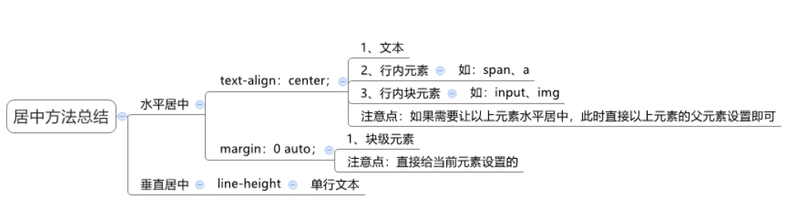
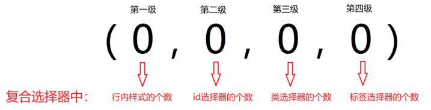
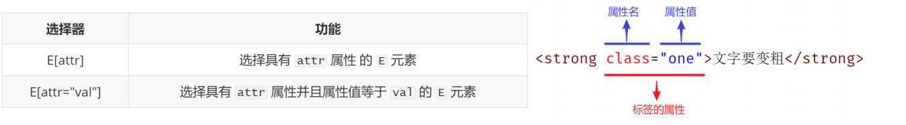
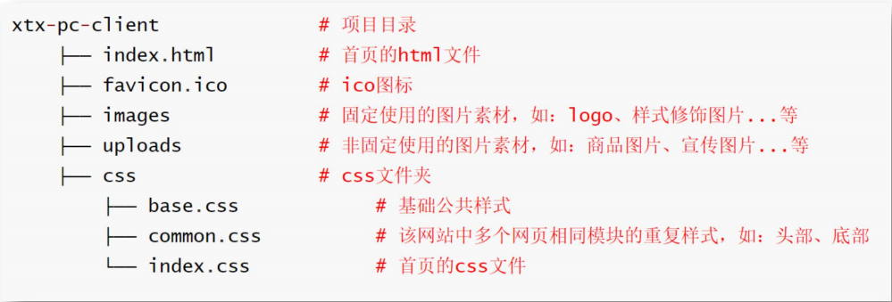
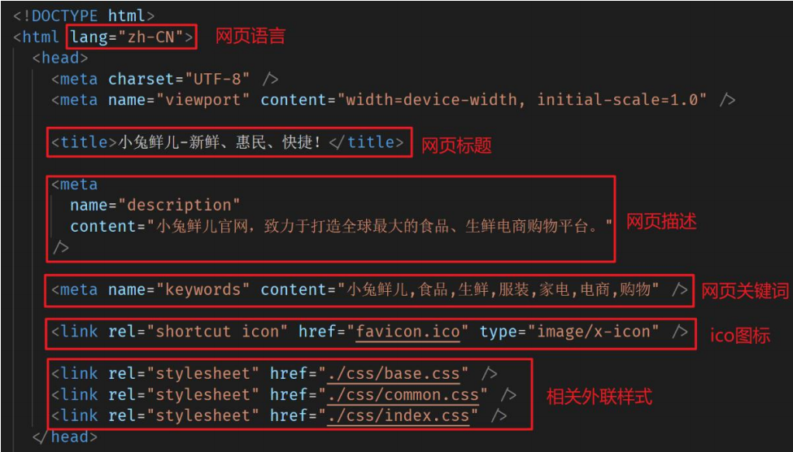

CSS：层叠样式表（Cascading style sheets），给页面中的HTML标签设置样式xxxxxxxxxxcss写在style标签中，style标签一般写在head标签里面，title标签下面
x1.CSS 标点符号都是英文状态下的 2.每一个样式键值对写完之后，最后需要写分号3.每个样式的多个值之间用空格隔开4.样式与值之间用冒号:，（区别于html属性与其值之间用等号=，且值要用引号""包裹）5.css常见属性： css常见属性 作用 color 文字颜色 font-size 字体大小 background-color 背景颜色 width 宽度 height 高度
6.基本结构： < ! DOCTYPE html><html lang= " en" > <head> <meta charset="UTF-8"> <meta name="viewport" content="width=device-width， initial-scale=1.0"><title>Document</title> <style> p{ color: red;font-size: 30pX; background-color: pink;width: 300px; height: 300px;} </style> </head> <body> <p>hello world 你好世界</p> </body> </html>xxxxxxxxxx1.内嵌式------CSS 写在style标签中------------------------------当前页面------小案例2.外联式------CSS 写在单独的css文件中，通过link标签引入----------多个页面------项目中3.行内式------cSS 写在标签的style属性中-------------------------当前标签------配合js使用
xxxxxxxxxx1.标签选择器： 标签名{ css属性名：属性值; ...; } <!--通过标签名，找到页面中所有这类标签，设置样式--> 注意： 1）标签选择器选择的*一类标签，而不是单独某一个 2）标签选择器无论嵌套关系有多深，都能找到对应的标签
2.类选择器： .类名{ CSS属性名：属性值; ...; } <!--通过类名，找到页面中所有带有这个类名的标签，设置样式--> 注意： 1）所有标签上都有class属性，class属性的属性值称为类名（类似于名字） 2）类名可以由数字、字母、下划线、中划线组成，但不能以数字或者中划线开头 3）一个标签可以同时有多个类名，类名之间以空格隔开 4）类名可以重复，一个类选择器可以同时选中多个标签
3.id选择器： #id属性值{ css属性名：属性值; ...; } <!--通过id属性值，找到页面中带有这个id属性值的标签，设置样式-->
注意： 1）所有标签上都有id属性 2）id属性值类似于身份证号码，在一个页面中是唯一的，不可重复的！ 3）一个标签上只能有一个id属性值 4）一个id选择器只能选中一个标签
说明： 1）class类名与id属性值的区别 class类名相当于姓名，可以重复，一个标签可以同时有多个class类名 id属性值相当于身份证号码，不可重复，一个标签只能有一个id属性值 2）类选择器与id选择器的区别 类选择器以 . 开头 id选择器以 # 开头 3）实际开发的情况 类选择器用的最多 id一般配合js使用，除非特殊情况，否则不要使用id设置样式 实际开发中会遇到冗余代码的抽取 （可以将一些公共的代码抽取到一个公共的类中去）
4.通配符选择器 找到页面中所有的标签，设置样式 *{ padding:0; margin:0; } 注意点： 1）开发中使用极少，只会在极特殊情况下才会用到 2）用于去除标签默认的margin和padding（后续讲解）
xxxxxxxxxx
1.字体大小：font-size 取值：数字 + px
2.注意： 1）谷歌浏览器默认文字大小是16px 2）单位需要设置，否则无效
3.字体粗细：font-weight 1）取值: i.关键字: 正常：normal 加粗：bold ii.纯数字:100~900的整百数: 正常：400 加粗：700 2）注意： i.不是所有字体都提供了九种粗细，因此部分取值页面中无变化 ii.实际开发中以：正常、加粗两种取值使用最多4.字体样式： 1）取值： 正常（默认值）：normal 倾斜：italic
2）常见字体系列（了解）： i.无衬线字体（sans-serif） 特点：文字笔画粗细均匀，并且首尾无装饰 场景：网页中大多采用无衬线字体 常见该系列字体：黑体、Arial
ii.衬线字体（serif） 特点：文字笔画粗细不均，并且首尾有笔锋装饰 场景：报刊书籍中应用广泛 常见该系列字体：宋体、Times New Roman
iii.等宽字体（monospace） 特点：每个字母或文字的宽度相等 场景：一般用于程序代码编写，有利于代码的阅读和编写 常见该系列字体：Consolas、fira code
5.字体类型：font-family 1）属性名：font-family 2）常见取值：具体字体1,具体字体2,具体字体3,具体字体4,...,字体系列 3）具体字体："Microsoft YaHei"、微软雅黑、黑体、宋体、楷体等 4）字体系列：sans-serif、serif、monospace等
5）渲染规则： i.从左往右按照顺序查找，如果电脑中未安装该字体，则显示下一个字体 ii.如果都不支持，此时会根据操作系统，显示最后字体系列的默认字体
6）注意： i.如果字体名称中存在多个单词，推荐使用引号包裹 ii.最后一项字体系列不需要引号包裹 iii.网页开发时，尽量使用系统常见自带字体，保证不同用户浏览网页都可以正确显示
6.字体类型：font属性连写 1）取值：font : style weight size family; 2）省略要求： 只能省略前两个，如果省略了相当于设置了默认值
3）注意点：i.如果需要同时设置单独和连写形式 ii.要么把单独的样式写在连写的下面 iii.要么把单独的样式写在连写的里面xxxxxxxxxx1. 文本缩进：text-indent 1）取值：数字+px 数字+em（推荐：1em = 当前标签的font-size的大小）
2.文本水平对齐方式：text-align left：左对齐 center：居中对齐 right：右对齐
3. text-align:center 能让哪些元素水平居中？ 1）文本 2）span标签、a标签 3）input标签、img标签 4）文本修饰：text-decoration <!--注意：如果需要让以上元素水平居中， text-align : center 需要给以上元素的父元素设置-->
4.文本修饰：text-decoration 属性值： underline：下划线（常用) line-through：删除线（不常用) overline：上划线（几乎不用) none：无装饰线（常用) <!--注意点：开发中会使用 text-decoration : none ; 清除a标签默认的下划线-->xxxxxxxxxx1.控制一行的上下行间距 属性名：line-height 取值： 数字+px 倍数（当前标签font-size的倍数）
2.应用： 1）让单行文本垂直居中可以设置 line-height : 文字**父元素高度** 2）网页精准布局时，会设置 line-height : 1 可以取消上下间距
3.行高与font连写的注意点： 1）如果同时设置了行高和font连写，注意覆盖问题 2）font : style weight size/line-height family ;xxxxxxxxxx标签水平居中方法总结 margin : 0 auto，但其自身必须先固定width、height
xxxxxxxxxx1.属性名： 文字颜色：color 背景颜色：background-color
2.属性值：（颜色的4种表示方法） 1）关键词 预定义的颜色名 red、green、blue、yellow.... 2）rgb表示法 红绿蓝三原色。每项取值范围:0~255 rgb(0,0,0)、rgb(255,255,255)、rgb(255,0,0.)…. 3）rgba表示法 红绿蓝三原色+a表示透明度，取值范围是0~1 rgba(255,255,255,0.5)、rgba(255,0,0,0.3.... 4）十六进制表示法 #开头，将数字转换成十六进制表示 #000000、#ff0000、#e92322，简写:#000、#fO0xxxxxxxxxx<!--复合选择器-->1.后代选择器：空格 根据 HTML 标签的嵌套关系，选择父元素后代中满足条件的元素
1）选择器语法：选择器1 选择器2 { css } 2）结果：在选择器1所找到标签的后代（儿子、孙子、重孙子…）中，找到满足选择器2的标签，设置样式 3）注意： i.后代包括：儿子、孙子、重孙子…… ii.后代选择器中，选择器与选择器之前通过 空格 隔开 iii.注意选择器1，和选择器2不要一样，否则会失效
2.子代选择器：> 根据 HTML 标签的嵌套关系，选择父元素 子代中 满足条件的元素 1）选择器语法：选择器1 > 选择器2 { css } 2）结果：在选择器1所找到标签的子代（儿子）中，找到满足选择器2的标签，设置样式 3）注意： i.子代只包括：儿子 ii.子代选择器中，选择器与选择器之前通过 > 隔开 iii.颜色，字体等有对下的继承关系，使用时需要注意
3.并集选择器：, 同时选择多组标签，设置相同的样式 1）选择器语法：选择器1,选择器2 { css } 2）结果：找到 选择器1 和 选择器2 选中的标签，设置样式 3）注意： i.并集选择器中的每组选择器之间通过 , 分隔 ii.并集选择器中的每组选择器可以是基础选择器或者复合选择器 iii.并集选择器中的每组选择器通常一行写一个，提高代码的可读性4.交集选择器：紧挨着 选中页面中 同时满足 多个选择器的标签 1）选择器语法：选择器1选择器2 { css } 2）结果：（既又原则）找到页面中 既 能被选择器1选中，又 能被选择器2选中的标签，设置样式 3）注意： i.交集选择器中的选择器之间是紧挨着的，没有东西分隔 ii.交集选择器中如果有标签选择器，标签选择器必须写在最前面
5.hover伪类选择器： 选中鼠标悬停在元素上的状态，设置样式 1）选择器语法：选择器:hover { css } 2）注意： 伪类选择器选中的元素的某种状态
6.总结：选择器 作用 格式 示例后代选择器 找后代 选择器之间通过空格分隔 .father .son{ css }子代选择器 找儿子 选择器之间通过>分隔 .father > .son{ css }并集选择器 找到多类元素 选择器之间通过,分隔 div,p,span{ css }交集选择器 找同时满足多个选择器的元素 选择器之间紧挨着 p.red{ css }hover伪类选择器 选中鼠标悬停在元素上的状态 a:hover { css } a:hoverxxxxxxxxxx通过简写语法，快速生成代码语法：类似于刚刚学习的选择器的写法
记忆 示例 效果标签名 div <div></div> 类选择器 .red <div class="red"></div>id选择器 #one <div id="one"></div>交集选择器 p.red#one <p class="red" id="one"></p>子代选择器 ul>li <u1><li></li></u1>内部文本 ul>li{我是li的内容} <u1><li>我是1i的内容</li></u1>创建多个 ul>li*3 <u1><li></li><li></li><li></li></u1>xxxxxxxxxx1.背景颜色： background-color（bgc）
1）属性值： 颜色取值：关键字、rgb表示法、rgba表示法、十六进制…… 2）注意： 背景颜色默认值是**透明**： rgba(0,0,0,0) 、transparent 背景颜色不会影响盒子大小，并且还能看清盒子的大小和位置，一般在布局中会习惯先给盒子设置背景颜色 背景颜色属性的属性值默认是透明：rgba(0,0,0,0)、transparent
2.背景图片： background-image（bgi）
1）属性值：background-image:url("./image.png") 2）注意点： i.背景图片中url中可以省略引号 ii.背景图片默认是在水平和垂直方向平铺的 iii.背景图片仅仅是指给盒子起到装饰效果，类似于背景颜色，是不能撑开盒子的（盒子必须要有宽高，才能显示）
3.背景平铺： 1）属性名：background-repeat（bgr） 2）属性值： repeat：(默认值)水平和垂直方向都平铺 no-repeat：不平铺 repeat-x：沿着水平方向(x轴）平铺 repeat-y：沿着垂直方向(y轴）平铺4.背景位置： background-position（bgp） 注意： 方位名词取值和坐标取值可以混使用，第一个取值表示水平，第二个取值表示垂直
xxxxxxxxxx5.背景相关属性连写： background（bg） 1）属性值：单个属性值的合写，取值之间以空格隔开 2）书写顺序： 推荐：background：color image repeat position 3）省略问题： i.可以按照需求省略 ii.特殊情况：在pc端，如果盒子大小和背景图片大小一样，此时可以直接写 background：url()
4）注意: 如果需要设置单独的样式和连写 i. 要么把单独的样式写在连写的下面 ii.要么把单独的样式写在连写的里面
5）img标签和背景图片区别： 需求：需要在网页中展示一张图片的效果？ i.方法一：直接写上img标签即可 img标签是一个标签，不设置宽高默认会以原尺寸显示 ii.方法二：div标签 + 背景图片 需要设置div的宽高，因为背景图片只是装饰的CSS样式，不能撑开div标签xxxxxxxxxx1.块级元素：display:block1）显示特点：i.独占一行（一行只能显示一个）ii.宽度默认是父元素的宽度，高度默认由内容撑开iii.可以设置宽高2）代表标签：div、p、h系列、ul、li、dl、dt、dd、form、header、nav、footer...2.行内元素：display:inline1）显示特点：i.一行可以显示多个ii.宽度和高度默认由内容撑开iii.不可以设置宽高2）代表标签：a、span 、b、u、i、s、strong、ins、em、del...3.行内块元素：display:inline-block1）显示特点：i.一行可以显示多个ii.可以设置宽高2）代表标签：input、textarea、button、select……3）特殊情况：img标签有行内块元素特点，但是Chrome调试工具中显示结果是inline4.元素显示模式转化：改变元素默认的显示特点，让元素符合布局要求1）语法：display: block-------------转换成块级元素------------使用较多display :inline-b1ock------转换成行内块元素----------使用较多display :inline------------转换成行内元素------------使用极少6.注意：1）块级元素一般作为大容器，可以嵌套：文本、块级元素、行内元素、行内块元素等等...但是：p标签中不要嵌套div、p、h等块级元素2）a标签内部可以嵌套任意元素但是：a标签不能嵌套a标签6.居中显示总结：

xxxxxxxxxx1.继承性： 子元素有默认继承父元素样式的特点（子承父业）
1）可以继承的常见属性(文字控制属性都可以继承) i.color ii.font-style、font-weight、font-size、font-family iii.text-indent、text-align iv.line-height ... 2）注意： 可以通过调试工具判断样式是否可以继承 3）优点：可以在一定程度上减少代码 4）常见应用场景： i.可以直接给ul设置 list-style:none 属性，从而去除列表默认的小圆点样式 ii.直接给body标签设置统一的font-size，从而统一不同浏览器默认文字大小
5）如果元素有浏览器默认样式，此时继承性依然存在，但是优先显示浏览器的默认样式 i.a标签的color会继承失效 其实color属性继承下来了，但是被浏览器默认设置的样式给覆盖掉了i ii.h系列标签的font-size会继承失效 其实font-size属性继承下来了，但是被浏览器默认设置的样式给覆盖掉了2.层叠性： 1）特性： i.给同一个标签设置不同的样式 → 此时样式会层叠叠加 → 会共同作用在标签上 ii.给同一个标签设置相同的样式 → 此时样式会层叠覆盖 → 最终写在最后的样式会生效 2）注意： i.当样式冲突时，只有当选择器优先级相同时，才能通过层叠性判断结果 ii.如果给同一个标签设置了相同的属性，此时样式会层叠覆盖，写在最后的会生效 iii.如果给同一个标签设置了不同的样式，此时样式会层叠叠加，共同作用在标签上
3.优先性： 不同选择器具有不同的优先级，优先级高的选择器样式会覆盖优先级低选择器样式 1）优先级公式： 继承 < 通配符选择器 < 标签选择器 < 类选择器 < id选择器 < 行内样式 < !important
2）注意： i.!important写在属性值的后面，分号的前面 ii.!important不能提升继承的优先级，只要是继承优先级最低 iii.实际开发中不建议使用 !important
4.权重叠加计算： 1）如果是复合选择器，此时需要通过权重叠加计算方法，判断最终哪个选择器优先级最高会生效 2）权重叠加计算公式：（每一级之间不存在进位）
比较规则： i.先比较第一级数字，如果比较出来了，之后的统统不看 ii.如果第一级数字相同，此时再去比较第二级数字，如果比较出来了，之后的统统不看 iii.... iv.如果最终所有数字都相同，表示优先级相同，则比较层叠性（谁写在下面，谁说了算!） 注意：!important如果不是继承，则权重最高，天下第一！
xxxxxxxxxx1. 通过软件打开设计图打开软件--->拖拽入设计图--->新建项目2. 常用快捷键放大设计图："ctrl" + "+"缩小设计图："ctrl" + "-"移动设计图：空格按住不放，鼠标拖动3. 常用工具量尺寸吸颜色4. 从psd文件中直接获取数据切换到开发界面，直接点击获取数据
xxxxxxxxxx0.盒子模型的介绍： 1）盒子的概念 页面中的每一个标签，都可看做是一个 “盒子”，通过盒子的视角更方便的进行布局 浏览器在渲染（显示）网页时，会将网页中的元素看做是一个个的矩形区域，我们也形象的称之为 盒子 2）盒子模型 CSS 中规定每个盒子分别由：内容区域（content）、内边距区域（padding）、边框区域（border）、外边距区域（margin）构成，这就是 盒子模型
1.width，height 利用 width 和 height 属性默认设置是盒子 内容区域 的大小 属性：width / height 常见取值：数字+px
2.边框border 1）给设置边框粗细、边框样式、边框颜色效果 属性值： 边框粗细------border-width------数字+px 边框样式------border-style------实线solid、虚线dashed 、点线dotted 边框颜色------border-color------颜色取值 2）连写形式： 属性值：单个取值的连写，取值之间以空格隔开 border : 10px solid red; 快捷键：bd + tab 3）单方向设置： 只给盒子的某个方向单独设置边框 属性名：border - 方位名词 属性值：连写的取值
3.内边距padding： 设置 边框 与 内容区域 之间的距离 1）属性名：padding 2）常见取值：数字 + px 3）记忆规则：从上开始赋值，然后顺时针赋值，如果没设置赋值的，看对面的 4）场景：只给盒子的某个方向单独设置内边距 属性名：padding - 方位名词 属性值：数字 + px
4.盒子大小计算： 1）注意： i.设置width和height是内容的宽高 ii.设置border会撑大盒子 2）盒子实际大小计算公式： 盒子宽度 = 左边框 + 左padding + 内容宽度 + 右padding + 右边框 盒子高度 = 上边框 + 上padding + 内容宽度 + 下padding + 下边框 3）注意： 不会撑大盒子的特殊情况（块级元素） i.如果子盒子没有设置宽度，此时宽度默认是父盒子的宽度 ii.此时给子盒子设置左右的padding或者左右的border，此时不会撑大子盒子
5.外边距margin： 设置边框以外，盒子与盒子之间的距离
1）属性名：margin 2）取值： margin: 10px; 上右下左都设置为10px margin: 10px 20px; 上下设置为10px、左右设置为20px margin: 10px 20px 30px; 上设置为10px、左右设置为20px、下设置为30px margin: 10px 20px 30px 40px; 上设置为10px、右设置为20px、下设置为30px、左设置为40px <!--记忆规则：从上开始赋值，然后顺时针赋值，如果没设置赋值的，看对面的--> 3）只给盒子的某个方向单独设置外边距 属性名：margin - 方位名词 属性值：数字 + px6.清除默认内外边距： 1）默认样式： 浏览器会默认给部分标签设置默认的margin和padding，但一般在项目开始前需要先清除这些标签默认的margin和padding，后续自己设置 比如：body标签默认有margin：8px 比如：p标签默认有上下的margin 比如：ul标签默认由上下的margin和padding-left 2）解决方法： i.淘宝： blockquote,body,button,dd,dl,dt,fieldset,form,h1,h2,h3,h4,h5,h6,hr,input,legend,li,ol,p,pre,td,textarea,th,ul { margin:0; padding:0; } ii.京东： *{ margin:0; padding:0; }
7.问题： 1）外边距折叠现象（合并现象）： i.垂直布局的块级元素，上下的margin会合并 ii.结果：最终两者距离为margin的最大值 iii.解决方法：避免就好 只给其中一个盒子设置margin即可
2）外边距折叠现象（塌陷现象）： i.互相嵌套的块级元素，子元素的margin-top会作用在父元素上 ii.结果：导致父元素一起往下移动 iii.解决方法： 1. 给父元素设置border-top 或者 padding-top（分隔父子元素的margin-top） 2. 给父元素设置overflow：hidden 3. 转换成行内块元素 4. 设置浮动 3）行内元素margin，padding无效xxxxxxxxxx1.结构伪类选择器： E:first-child { } 匹配父元素中第一个子元素，并且是E元素 E :1ast-child { } 匹配父元素中最后一个子元素，并且是E元素 E:nth-child(n){} 匹配父元素中第n个子元素，并且是E元素 E:nth-1ast-child(n){ } 匹配父元素中倒数第n个子元素，并且是E元素 1）作用：根据元素在HTML中的结构关系查找元素 2）优势：减少对于HTML中类的依赖，有利于保持代码整洁 3）场景：常用于查找某父级选择器中的子元素 4）注意： i.E:结构选择，之间不能空格，否则附带了后代选择效果，极易错误 ii.子元素不需要和父元素类型一致（表格写的有问题）
n的注意点: 1. n为:0、1、2、3、4、5、6、...... 2.通过n可以组成常见公式 功能 公式 偶数 2n、even 奇数 2n+1、2n-1、odd 找到前5个 -n+5 找到从第5个往后 n+5
2.nth-of-type结构伪类选择器: E:nth-of-type(n){} 只在父元素的同类型(E)子元素范围中，匹配第n个1）区别： :nth-child → 直接在所有孩子中数个数 :nth-of-type → 先通过该 类型 找到符合的一堆子元素，然后在这一堆子元素中数个数 3.伪元素： 伪元素：一般页面中的非主体内容可以使用伪元素 ::before 在父元素内容的最前添加一个伪元素 ::after 在父元素内容的最后添加一个伪元素
1）区别： i.元素：HTML 设置的标签 i.伪元素：由 CSS 模拟出的标签效果 2）注意： i.必须设置content属性才能生效，content:'一段话'，实际就是在第一个子元素前插入一个字符串（要加引号） ii.伪元素默认是行内元素，就是span iii.之间不能空格，否则附带了后代选择效果，极易错误xxxxxxxxxx1.标准流： 标准流：又称文档流，是浏览器在渲染显示网页内容时默认采用的一套排版规则，规定了应该以何种方式排列元素 常见标准流排版规则： 1）块级元素：从上往下，垂直布局，独占一行 2）行内元素 或 行内块元素：从左往右，水平布局，空间不够自动折行 2.浮动： 1）早期的作用：图文环绕 2）现在的作用：网页布局，让垂直布局的盒子变成水平布局，如：一个在左，一个在右 3）属性名：float 4）属性值： left：左浮动 right：右浮动 5）特点： i.浮动元素会**脱离标准流**（简称：脱标），在标准流中不占位置，相当于从地面飘到了空中，（后面的元素会被其覆盖） ii.浮动找浮动，下一个浮动元素会在上一个浮动元素后面左右浮动 iii.浮动元素有特殊的显示效果，一行可以显示多个，可以设置宽高 6）注意： 浮动的元素不能通过text-align:center或者margin:0 auto居中 7）用法： style="float:left"，被加上该属性的元素会左浮动 8）危害：浮动来的元素不在原来的层占空间，导致其后紧接着的元素上移动（被浮动元素覆盖），时父元素高度塌陷xxxxxxxxxx0.如果子元素浮动了，此时子元素不能撑开标准流的块级父元素 （会影响后面不浮动的物体，后面不浮动的物体接在前面不浮动的物体后面，可能会被浮动的物体遮挡） 原因：子元素浮动后脱标 → 不占位置 目的：需要父元素有高度，从而不影响其他网页元素的布局
1.清除浮动的方法---直接设置父元素高度： 优点：简单粗暴，方便 缺点：有些布局中不能固定父元素高度。如：新闻列表、京东推荐模块 <!--只能解决浮动元素不能撑开空间，不能避免对后续元素的影响-->
2.清除浮动的方法---额外标签法： 1）在父元素的最后一个元素后面添加一个块级元素（span等不行） 2）给添加的块级元素设置 clear:both 缺点：会在页面中添加额外的标签，会让页面的HTML结构变得复杂 3）例子： <div style="border: 1px solid black;" > <div style="float: left;background-color: pink;width: 100px;height: 100px;"></div> <div style="clear: both;"></div> </div>
3.清除浮动的方法---单伪元素清除法： 操作:用伪元素替代了额外标签 基本写法: .clearfix :: after { content: l. display: block ;clear: both;}
补充写法： .clearfix :: after { content: ''; display: block;clear: both; height: 0; visibility: hidden; } <!--补充代码:在网页中看不到伪元素--> 优点：项目中使用，直接给标签加类即可清除浮动， 注意：clearfix类名要加在浮动元素的父元素上，才能清除浮动 例子： <div class="clearfix" style="border: 1px solid black;" > <div style="float: left;background-color: pink;width: 100px;height: 100px;"></div> </div>
<style> .clearfix::after{ content: ''; display: block; clear: both; } </style>
4.清除浮动的方法 ---双伪元素清除法: 优点：项目中使用，直接给标签加类即可清除浮动 注意：clearfix类名要加在浮动元素的父元素上，才能清除浮动 例子： .clearfix::before, .clearfix::after{ content:''; display:table; } .clearfix::after{ clear:both; }
5.清除浮动的方法 ---给父元素设置overflow : hidden： 直接给父元素设置 overflow : hidden 优点：方便xxxxxxxxxx块格式化上下文（Block Formatting Context）：BFC是Web页面的可视CSS渲染的一部分，是块盒子的布局过程发生的区域，也是浮动元素与其他元素交互的区域。
1.创建BFC方法： 1）html标签是BFC盒子 2）浮动元素是BFC盒子 3）行内块元素是BFC盒子 4）overflow属性取值不为visible。如：auto、hidden… 5）...
2.BFC盒子常见特点： 1） BFC盒子会默认包裹住内部子元素（标准流、浮动）→ 应用：清除浮动 2）BFC盒子本身与子元素之间**不存在margin的塌陷现象** → 应用：解决margin的塌陷 3）...xxxxxxxxxx0.介绍 标准流： 块级元素独占一行 → 垂直布局 行内元素/行内块元素一行显示多个 → 水平布局
浮动： 可以让原本垂直布局的 块级元素变成水平布局
定位： 可以让元素自由的摆放在网页的任意位置 一般用于 盒子之间的层叠情况
1.使用定位的步骤： (1)设置定位方式 属性名：position 常见属性值: 定位方式 属性值 静态定位 static 相对定位 relative 绝对定位 absolute 固定定位 fixed (2)设置偏移值 偏移值设置分为两个方向，水平和垂直方向各选一个使用即可 选取的原则一般是就近原则 （离哪边近用哪个）
方向 属性名 属性值 含义 水平 left 数字+px 距离左边的距离 水平 right 数字+px 距离右边的距离 垂直 top 数字+px 距离上边的距离 垂直 bottom 数字+px 距离下边的距离2.静态定位: 介绍：静态定位是默认值，就是之前认识的标准流。 代码：position:static; 注意点： 静态定位就是之前标准流，不能通过方位属性进行移动 之后说的定位不包括静态定位，一般特指后几种：相对、绝对、固定
3.相对定位 介绍：自恋型定位，相对于自己之前的位置进行移动 代码：position:relative;left:100px;都写在子元素上
<div style="background-color: aqua;" > <div style="background-color: pink;width: 100px;height: 100px;position: relative;left: 500px;"></div> </div>
特点： i.需要配合方位属性实现移动 ii.对于自己原来位置进行移动 iii.在页面中占位置 → 没有脱标
应用场景： i.配合绝对定位组CP（子绝父相） i.用于小范围的移动
4..绝对定位： 介绍：拼爹型定位，相对于非静态定位的父元素进行定位移动 代码：position:absolute;left:100px；都写在子元素上 且富父元素不能是默认的position:static，一般子绝父相
<div style="background-color: brown;position:re1ative;width:500px;height: 500px;" > <div style="background-color: pink;width:100px;height:100px;position:absolute;left:100px;"></div> </div> 注意：父元素要设置宽度、高度，否则会遮挡父级元素
特点： i.需要配合方位属性实现移动 ii.默认相对于浏览器可视区域进行移动 iii.在页面中不占位置 → 已经脱标
应用场景： 配合绝对定位组CP（子绝父相） 让子元素相对于父元素进行自由移动
绝对定位相对于谁移动？ i.祖先元素中没有定位 → 默认相对于浏览器进行移动 ii.祖先元素中有定位 → 相对于 最近的 有定位 的祖先元素进行移动
子绝父相好处： 父元素是相对定位，则对网页布局影响最小 在使用子绝父相的时候，发现父元素已经有绝对定位了，此时直接子绝即可 父元素已经有定位已经满足要求，如果盲目修改父元素定位方式，可能会影响之前写好的布局
5.固定定位: 介绍：死心眼型定位，相对于浏览器进行定位移动 代码：position:fixed;
<div style="background-color: rgb(4, 53, 28);width: 100px;height: 100px;position: fixed;"></div>
特点： i.需要配合方位属性实现移动 ii.相对于浏览器可视区域进行移动 iii.在页面中不占位置 → 已经脱标
应用场景： 让盒子固定在屏幕中的某个位置 总结: 定位方式 属性值 相对于谁移动 是否占位置 静态定位 static 不能通过方位属性移动 占位置 相对定位 relative 相对于自己原来的位置 占位置 绝对地位 absolute 相对于最近的且有定位的祖先元素移动 不占位置（脱标) 固定定位 fixed 相对于浏览器可视区域 不占位置（脱标)
6.元素的层级关系： 不同布局方式元素的层级关系： 标准流 < 浮动 < 定位
不同定位之间的层级关系： 相对、绝对、固定默认层级相同
此时HTML中写在下面的元素层级更高，会覆盖上面的元素
改变定位元素的层级 属性名：z-index 属性值：数字 数字越大，层级越高
7.垂直对齐方式： 属性名：vertical-align，要附加给文本域标签上 属性值： 属性值 效果 baseline 默认，基线对齐 top 顶部对齐 middle 中部对齐 bottom 底部对齐 作用： i.文本框和表单按钮无法对齐问题 ii.input和img无法对齐问题 iii.div中的文本框，文本框无法贴顶问题 iv.div不设高度由img标签撑开，此时img标签下面会存在额外间隙问题 v.使用line-height让img标签垂直居中问题
注意点： 学习浮动之后，不推荐使用行内块元素让div一行中显示，因为可能会出现垂直对齐问题 推荐优先使用浮动完成效果
例子：文本域和按钮底部对齐 <textarea name="" id="" cols="30" rows="10" style="vertical-align:bottom;"></textarea> <button>按钮</button>
8.光标类型： 设置鼠标光标在元素上时显示的样式 属性名：cursor 常见属性值： 属性值 效果 default 默认值，通常是箭头 pointer 小手效果，提示用户可以点击 text 工字型，提示用户可以选择文字 move 十字光标，提示用户可以移动
9.边框圆角: 场景：让盒子四个角变得圆润，增加页面细节，提升用户体验 属性名：border-radius 常见取值：数字+px 、百分比 赋值规则：从左上角开始赋值，然后顺时针赋值，没有赋值的看对角
10.溢出部分显示效果: 溢出部分：指的是盒子 内容部分 所超出盒子范围的区域 场景：控制内容溢出部分的显示效果，如：显示、隐藏、滚动条…… 属性名：overflow，加给父元素，控制其子元素显示效果 常见属性值： 属性值 效果 visible 默认值，溢出部分可见 hidden 溢出部分隐藏 scroll 无论是否溢出，都显示滚动条 auto 根据是否溢出，自动显示或隐藏滚动条
11.元素本身隐藏: 让某元素本身在屏幕中不可见。如：鼠标:hover之后元素隐藏 常见属性： visibility：hidden display：none
区别： visibility：hidden 隐藏元素本身，并且在网页中 占位置 display：none 隐藏元素本身，并且在网页中 不占位置
注意点： 开发中经常会通过 display属性完成元素的显示隐藏切换 display：none；（隐藏）、 display：block；（显示）
12.元素整体透明度: 让某元素整体（包括内容）一起变透明 属性名：opacity 属性值：0~1之间的数字 1：表示完全不透明 0：表示完全透明
注意点： opacity会让元素整体透明，包括里面的内容，如：文字、子元素等……
13.边框合并: 让相邻表格边框进行合并，得到细线边框效果 代码：border-collapse：collapse；xxxxxxxxxx1.链接伪类选择器： 场景：常用于选中超链接的不同状态 选择器语法： 选择器语法 功能 a:link { } 选中a链接未访问过的状态 a:visited { } 选中a链接访问之后的状态 a:hover { } 选中鼠标悬停的状态 a:active { } 选中鼠标按下的状态 注意点： i.如果需要同时实现以上四种伪类状态效果，需要按照 LVHA 顺序书写 ii.记忆口诀：男盆友送了你一个 LV 包包，你开心的 HA 哈笑 iii.其中 :hover伪类选择器 使用更为频繁，常用于选择各类元素的悬停状态
2.焦点伪类选择器： 用于选中元素获取焦点时状态，常用于表单控件 选择器语法： input:focus { background-color: skyblue; } 效果： 表单控件获取焦点时默认会显示外部轮廓线
3.属性选择器： 通过元素上的HTML属性来选择元素，常用于选择 input 标签 选择器语法：
xxxxxxxxxx项目中将多张小图片，合并成一张大图片，这张大图片称之为精灵图优点：减少服务器发送次数，减轻服务器的压力，提高页面加载速度 background-position：x yxxxxxxxxxx设置背景图片的大小， 语法：background-size：宽度 高度； 取值： 取值 场景 数字+px 简单方便，常用 百分比 相对于当前盒子自身的宽高百分比 contain 包含，将背景图片等比例缩放，直到不会超出盒子的最大 cover 覆盖，将背景图片等比例缩放，直到刚好填满整个盒子没有空白
连写格式： 注意点： background-size和background连写同时设置时，需要注意覆盖问题 background:color image repeat position/size; 解决： i.要么单独的样式写连写的下面 ii.要么单独的样式写在连写的里面xxxxxxxxxx给文字添加阴影效果，吸引用户注意 属性名：text-shadow text-shadow:h-shadow v-shadow blur color;
例子: text-shadow:2px 3px 2px red;
取值： 参数 作用 h-shadow 必须，水平偏移量，允许负值 v-shadow 必须，垂直偏移量，允许负值 blur 可选，模糊度 color 可选，阴影颜色
xxxxxxxxxx给盒子添加阴影效果，吸引用户注意，体现页面的制作细节 属性名：box-shadow 取值： 参数 作用 h-shadow 必须，水平偏移量。允许负值 v-shadow 必须，垂直偏移量。允许负值 blur 可选，模糊度 spread 可选，阴影扩大 color 可选，阴影颜色 inset 可选，将阴影改为内部阴影xxxxxxxxxx让元素的样式慢慢的变化，常配合hover使用，增强网页交互体验 属性名：transition 常见取值： 参数 取值 过渡的属性 all]:所有能过渡的属性都过渡、[具体属性名如: width :只有width有过渡 过渡的时长 数字+s(秒)
注意点： i.过渡需要：默认状态 和 hover状态样式不同，才能有过渡效果 ii.transition属性给需要过渡的元素本身加 iii.transition属性设置在不同状态中，效果不同的 给默认状态设置，鼠标移入移出都有过渡效果 给hover状态设置，鼠标移入有过渡效果，移出没有过渡效果 例子: //html
<div></div>
//css <style> div{ width:100px; height: 100px; background-color: pink; transition: width 5s ,height 5s,background-color 5s; } div:hover{ width: 300px; height: 300px; background-color: blue; } xxxxxxxxxxSearch Engine Optimization）：搜索引擎优化 i.title：网页标题标签 ii.description：网页描述标签 iii.keywords：网页关键词标签
让网站在搜索引擎上的排名靠前，提升SEO的常见方法： i.竞价排名 ii.将网页制作成html后缀 ii.标签语义化（在合适的地方使用合适的标签）
例子: <title>京东(JD.COM)-正品低价、品质保障、配送及时、轻松购物!</title> <meta name="description" content="京东JD.COM-专业的综合网上购物商城,销售家电、数码通讯、电脑、家居百货、服装服饰、母婴、图书、食品等数万个品牌优质商品.便捷、诚信的服务，为您 提供愉悦的网上购物体验!"/> <meta name= "keywords" content="网上购物,网上商城,手机,笔记本,电脑,MP3,CD, VCD,DV,相机,数码,配件,手表,存储卡,京东"/>xxxxxxxxxx把页面的主体内容约束在网页中间 让不同大小的屏幕都能看到页面的主体内容 代码： /*版心*/ .container { width: 1240px; margin: 0 auto; }
注意点： 版心类名常用：container、wrapper、w 等xxxxxxxxxx1.图标 <link rel="shortcut icon" href="ico图标路径" type="image/x-icon">
html标识： <html lang="zh-CN"> <meta charset="UTF-8">xxxxxxxxxx衡量程序员的能力，除了要看实现业务需求的能力，还要看平时书写代码的规范（专业性） 不同的CSS书写顺序会影响浏览器的渲染性能，推荐前端工程师使用专业的书写顺序习惯
顺序 类别 属性 1 布局属性 display .position .float , clear. visibility . overflow 2 盒子模型+背景 width . height .margin .padding .border 、 background 3 文本内容属性 color .font . text-decoration . text-align .line-height 4 点缀属性 cursor. border-radius . text-shadow .box-shadow
注意点： 开发中推荐多用类 + 后代，但不是层级越多越好，一个选择器中的类选择器的个数推荐 不要超过 3 个
